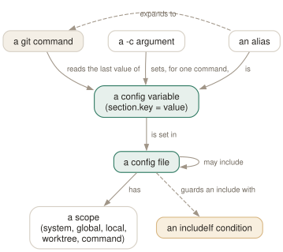

Day 12
Config and aliases
Five layers of settings, the last one read wins, and a small language of your own on top.
By the end of today you can
- find out which file a setting came from, and why the value you set is not the one git uses
- keep a second identity for work repositories that switches on by directory, with no manual step
- write aliases — plain and shell — and know when an alias is the wrong tool
Five layers, and the last one read wins
git's configuration is not one file. It is a stack of files read in a fixed order, plus whatever you pass on the command line, and for any single-valued setting the value read last is the one that counts. Almost every “git ignores my setting” story is a setting defined twice, in two layers, and the other one being read later.
The order, first to last:
- system
- The installation's file, usually
/etc/gitconfig. Shared by every user on the machine. - global
- Yours. Two files, both in the global scope:
~/.config/git/configis read first, then~/.gitconfig. Most people only have the second. If both exist and disagree,~/.gitconfigwins. - local
- The repository's
.git/config. Remotes and branch upstreams live here;git clonewrites it for you. - worktree
.git/config.worktree, only ifextensions.worktreeConfigis enabled. Otherwise--worktreequietly means--local.- command
- Anything given with
git -c name=valueorGIT_CONFIG_COUNT. Read last, so it always wins.
The file format is the one in the manual page's CONFIGURATION MECHANISM section: [section] headers, key = value lines, # or ; comments. Section and key names are case-insensitive — pull.ff, Pull.FF and [pull] ff are the same variable — and a section may appear any number of times.

-c wins because it is read last, a local file beats the global one because it is read later, and an includeIf behaves as if its file were pasted in at that line. An alias is not a separate mechanism at all; it is one more variable.Asking git where a value came from
Since 2.46, git config has proper subcommands — list, get, set, unset, edit — and the old forms are listed under DEPRECATED MODES in git-config(1). They still work in 2.52, silently, so both appear in the wild. Use the new ones. The two display flags are the useful part:
$ git config list --show-origin --show-scope
global file:/home/ada/.gitconfig user.name=Ada Example
global file:/home/ada/.gitconfig user.email=ada@example.com
local file:.git/config core.repositoryformatversion=0
local file:.git/config core.editor=vim
$ git config get --all --show-scope user.name
global Ada Global
local Ada Local
$ git config get user.name
Ada Local
$ git -c user.name=Cmdline config get --show-scope user.name
command Cmdline
Writes go to the local file unless you say otherwise, which surprises people who expected set to be global. git config set --global writes ~/.gitconfig; git config edit --global opens it.
Scripts care about exit status: get returns 1 for an unset key, unset returns 5 when there was nothing to remove, and --type=bool --default=false turns an unset or odd-looking value into a clean true/false. For a completely clean environment — a test, a bug report — GIT_CONFIG_GLOBAL=/dev/null GIT_CONFIG_NOSYSTEM=1 leaves only the repository's own file.
One machine, two identities
The problem everyone with a work laptop has: personal repositories should commit as you, work repositories as your work address, and remembering to run git config user.email after every clone does not happen. The answer is a conditional include:
# ~/.gitconfig
[user]
name = Ada Example
email = ada@example.com
[includeIf "gitdir:~/work/"]
path = ~/.gitconfig-work
# ~/.gitconfig-work
[user]
email = ada@work.example
An include is read as if its contents were pasted in at that line. Put the includeIf after your default [user] so that the work value is read later and wins. Check it from inside a work repository:
$ cd ~/work/api && git config get --show-origin user.email
file:/home/ada/.gitconfig-work ada@work.example
$ cd ~/workshop && git config get user.email
ada@example.com
Note ~/workshop: it shares a prefix with ~/work but is not under it. The pattern is a path glob, not a string prefix: the trailing slash becomes ~/work/**, which matches whole directories below ~/work and nothing beside it.
Aliases are config too
An alias is a variable in the [alias] section. git lg looks up alias.lg, splits the value into words, and runs the result as a git command with your arguments appended. git help lg prints the expansion, which is the fastest way to read someone else's.
$ git config set --global alias.lg 'log --graph --oneline --all'
$ git help lg
'lg' is aliased to 'log --graph --oneline --all'
A value starting with ! is handed to the shell instead, with your arguments appended as positional parameters. That lets an alias run any program, pipe, or several git commands in a row. The idiom for using arguments in the middle of a command is a throwaway function: !f() { git log --author="$1" --oneline; }; f.
Two limits. An alias cannot replace a built-in — alias.status is silently ignored, so git status stays git status. And an alias hides the real command from the person looking over your shoulder, so keep them for long spellings you type daily, not for renaming verbs. Most of what people alias — co, br, ci — saves two keystrokes and costs you fluency on every other machine.
Today's habit
Open your ~/.gitconfig with git config edit --global and read it top to bottom. Delete every line you cannot explain. What is left, plus the lines this course adds with a reason attached, is a file you can carry between machines.
Tomorrow: stash and worktrees — two ways to put work aside, one of which is almost always the better choice.
New vocabulary
Commands
| Command | Does |
|---|---|
git config list --show-origin --show-scope | List every setting in effect, with the file and scope it came from. |
git config get <name> | Print the value git will use. Exit status 1 if unset. |
git config set [--global] <name> <value> | Write a setting, to the repository's .git/config unless told otherwise. |
git config unset [--global] <name> | Remove a setting from one file. Exit status 5 if it was not there. |
git config edit --global | Open ~/.gitconfig in your editor. |
git -c <name>=<value> <cmd> | Override one setting for one command, above every file. |
git help <alias> | Print what an alias expands to. |
Options
| Option | Does |
|---|---|
includeIf."gitdir:<dir>/".path | Read another config file only for repositories under dir. |
alias.<name> | Define git <name>. A leading ! makes it a shell command. |
GIT_CONFIG_GLOBAL | Read this file instead of ~/.gitconfig; /dev/null for none. |
GIT_PREFIX | Set for shell aliases: the directory you ran them from, relative to the top level. |
Today's configappend to ~/.gitconfig
Aliases for things no built-in says in one word. lg shows every branch as a graph; last is the commit you just made, with its files; aliases lists these very lines, using get --all --show-names because plain get --regexp prints one bare value.
[alias]
lg = log --graph --oneline --all
last = log -1 --stat
aliases = !git config get --all --show-names --regexp '^alias\\.'
A second identity for everything under ~/work/. The trailing slash matters: it means every repository below that directory. If ~/.gitconfig-work does not exist git silently skips it, so this line is harmless until you create that file.
[includeIf "gitdir:~/work/"]
path = ~/.gitconfig-work
git reads its config afresh on every command, so there is nothing to reload. Check what is in force, and which file it came from, with git config list --show-origin.
Drillsdo these in a real terminal, today
Self-check
Answer out loud first, then unfold.
You ran git config set --global pull.ff only, but in one repository git pull still creates merge commits. Where do you look?
At the other layers. Local .git/config is read after ~/.gitconfig, and for a single-valued setting the last value read wins, so a stale pull.ff or pull.rebase in that repository beats yours. git config get --all --show-origin --show-scope pull.ff shows every definition in the order git read them.
Also check the environment and the command line: a wrapper script or an alias passing -c, or GIT_CONFIG_GLOBAL pointing somewhere else, changes what “global” means.
Your [includeIf "gitdir:~/work"] block never applies, although every work repository is under ~/work. Why?
Because the pattern is matched against the repository's .git directory, not the working directory, and without a trailing slash it has to match the whole path. ~/work/api/.git is not ~/work. With gitdir:~/work/ git appends ** for you, and everything below matches — including ~/work itself if it is a repository. Note also that includeIf "gitdir:…" never applies outside a repository, so git config get user.email run from /tmp shows your default identity.
You define alias.grepall = !grep -rn TODO . and run it from src/. It searches the whole project. Why, and how do you fix it?
Shell aliases run from the top level of the working tree, not from where you typed them. git puts the directory you started in, relative to the top, in GIT_PREFIX (src/ here). Write !cd "${GIT_PREFIX:-.}" && grep -rn TODO . to get the behaviour you expected.
Plain (non-!) aliases do not have this problem: they are git commands, and git commands already understand the current directory.
A script does git config get --regexp '^remote\.' expecting a list of remotes, and gets one bare URL. What happened?
The new get subcommand keeps the semantics of a single lookup: it returns the last matching value, and prints values without names. You need --all --show-names for the old --get-regexp behaviour. The deprecated spellings (git config --get-regexp, git config name value) still work in 2.52 without a warning, which is why old scripts keep running and new ones get surprised.
Cheat sheet
Order of reading: system, global, local, worktree, command. Last one wins.
git config list --show-origin --show-scope # everything, and where from
git config get --all --show-scope KEY # every definition, in read order
git config set --global KEY VALUE # without --global: .git/config
git config unset --global KEY # exit 5 if absent
git config edit --global # open ~/.gitconfig
git -c KEY=VALUE CMD # one command, beats every file
GIT_CONFIG_GLOBAL=/dev/null git ... # run without your global file
[includeIf "gitdir:~/work/"] path = ... # trailing slash = everything below
alias.x = log --oneline / alias.y = !sh # ! runs at top level; see GIT_PREFIX
git help ALIAS # what it expands to
Everything through Day 12
Commands
| Command | Does |
|---|---|
git init -b main | Create an empty repository whose first branch is main. |
git hash-object <file> | Print the object name the file's contents would get. Writes nothing without -w. |
git cat-file -t <object> | Print an object's type: blob, tree, commit or tag. |
git cat-file -p <object> | Pretty-print an object's contents. The one command that shows what git really stores. |
git cat-file -s <object> | Print an object's size in bytes. |
git ls-tree -r <tree-ish> | List every blob in a tree, recursively, with mode and hash. |
git rev-parse HEAD | Turn a name into the full hash it currently means. |
git count-objects -v | Count loose and packed objects and the disk they use. |
git status -s | Show each changed path with two columns: index vs HEAD, then working tree vs index. |
git add <path> | Copy the file's current contents into the index. Writes the blob immediately. |
git add -p | Walk through each hunk and choose which ones go into the index. |
git diff | Show what differs between the index and the working tree — what add would stage. |
git diff --staged | Show what differs between HEAD and the index — what commit would record. |
git restore <path> | Overwrite the working-tree file with the index version. Discards unstaged edits. |
git restore --staged <path> | Reset the index entry to HEAD's version. The working tree is untouched. |
git commit [-a] | Turn the index into a tree, wrap it in a commit, move the branch to it. -a first stages every modified tracked file (never untracked ones). |
git rm --cached <path> | Remove a path from the index only; the file stays on disk, now untracked. |
git branch | List local branches; * marks the one HEAD names. |
git branch -v | List branches with the commit each points at and its subject line. |
git branch <name> | Create a branch at HEAD without switching to it. |
git switch <branch> | Point HEAD at a branch and update the index and working tree to its commit. |
git switch -c <name> | Create a branch at HEAD and switch to it in one step. |
git switch - | Switch back to the branch you were on before. |
git switch --detach <commit> | Point HEAD directly at a commit, with no branch in between. |
git branch -d <name> | Delete a branch, refusing unless it is merged into its upstream (or into HEAD, if it has none). |
git branch -D <name> | Delete a branch unconditionally. |
git branch -m <old> <new> | Rename a branch. |
git merge <branch> | Bring the branch's history into the current one: fast-forward if possible, else a merge commit. |
git merge --ff-only <branch> | Merge only if it is a fast-forward; otherwise refuse and change nothing. |
git merge --no-ff <branch> | Always create a merge commit, even when a fast-forward was possible. |
git merge --abort | Give up a conflicted merge and restore the state before it started. |
git merge-base A B | Print the best common ancestor of two commits — the version a merge compares against. |
git ls-files -u | List the unmerged index entries: one line per stage per conflicted path. |
git show :1:<path> | Show the base version of a conflicted file. :2: is yours, :3: theirs. |
git checkout --conflict=merge <path> | Recreate the conflict markers in a file you mangled; =zdiff3 works too. |
git clone <url> | Copy a repository: all objects, its branches as origin/*, and one local branch checked out. |
git remote -v | List remotes with their fetch and push URLs. |
git remote add <name> <url> | Register another repository under a short name. |
git fetch | Download new objects and move the remote-tracking refs. Never touches your branches or files. |
git pull | Fetch, then integrate the upstream into the current branch. |
git push | Send the current branch's commits and move the branch of the same name on the remote. |
git push -u origin <branch> | Push and record origin/<branch> as this branch's upstream. |
git push origin --delete <branch> | Delete a branch on the remote. |
git branch -vv | List branches with their upstream and ahead/behind counts. |
git log --oneline --graph --all | Draw every branch's history, one line per commit. |
git log -p | Show each commit's diff against its parent. |
git log --stat | Show which files each commit touched, and how much. |
git log --author=<re> --since=<date> | Keep only commits whose author matches, from a date onwards. |
git log -- <path> | Keep only commits that changed the path. The -- separates paths from revisions. |
git log --follow -- <file> | Follow one file's history back through renames. |
git log -S<string> | Pickaxe: keep commits that change how many times the string occurs. |
git log -G<regex> | Keep commits whose diff adds or removes a line matching the regex. |
git log -L :<func>:<file> | Show the history of one function (or -L 10,20:file for a line range). |
git show <commit> | Show one commit: message and diff. |
git blame -w -C <file> | Annotate each line with its last commit, ignoring whitespace and seeing moves between files. |
git rev-parse --verify <rev> | Resolve an expression to one object name, or fail. The checker for everything today. |
git rev-parse --abbrev-ref <rev> | Print the short ref name an expression means: @{u} becomes origin/main. |
git rev-parse --symbolic-full-name <rev> | Print the full ref name, e.g. refs/remotes/origin/main. |
git log A..B | List commits reachable from B but not from A: what B has that A lacks. |
git log --left-right A...B | List commits on either side but not both, marked < or >. |
git diff A...B | Diff from the merge base of A and B to B: what B changed since they split. |
git show <rev>:<path> | Print a file as it was in any commit, without checking anything out. |
git show :<path> | Print the version of a file currently staged in the index. |
git commit --amend | Replace the last commit with a new one built from the current index. Opens the editor. |
git commit --amend --no-edit | Amend, keeping the message: for the file you forgot to add. |
git reset --soft <rev> | Move the branch to rev. Index and working tree untouched. |
git reset <rev> | Move the branch and reset the index to it (--mixed, the default). Working tree untouched. |
git reset --hard <rev> | Move the branch, and overwrite index and working tree to match. Destroys uncommitted work. |
git reset -- <path> | Copy path from HEAD into the index: unstage. The branch does not move. |
git restore --source=<rev> <path> | Overwrite a working-tree file with its version from any commit. |
git revert <commit> | Make a new commit that undoes commit. The safe undo for published history. |
git clean -n | List the untracked files -f would delete. Add -d for directories, -x for ignored files. |
git clean -fd | Delete untracked files and directories. Ignored files survive unless -x. |
git rebase <upstream> | Replay the commits in <upstream>..HEAD on top of upstream. With no argument, uses @{u}. |
git rebase --onto <new> <old> [<branch>] | Replay <old>..<branch> on top of new: transplant part of a branch. |
git rebase --continue | After resolving and git adding a conflict, commit it and go on. |
git rebase --skip | Drop the commit that stopped, and go on. |
git rebase --abort | Put the branch back exactly where it was before the rebase started. |
git push --force-with-lease | Overwrite the remote branch only if it is still where your remote-tracking branch says. |
git push --force-if-includes | With the lease: also refuse if the remote tip was fetched but never integrated locally. |
git rebase -i <base> | Open the todo list for <base>..HEAD in your editor, then run it. |
git rebase --edit-todo | Re-open the remaining todo list while a rebase is stopped. |
git commit --fixup=<commit> | Commit the staged change as fixup! <subject>, to be melted into commit later. |
git commit --fixup=amend:<commit> | Like --fixup, but the squash also replaces the target's message. |
git rebase -i --autosquash <base> | Move every fixup!/squash!/amend! commit under its target and mark it. |
git rebase -x '<cmd>' <base> | Run cmd after every replayed commit; stop at the first failure. |
git range-diff <base> <old> <new> | Pair up the commits of two versions of a branch and show how each changed. |
git reflog | List where HEAD has pointed, newest first, as HEAD@{n} entries. Short for git reflog show HEAD. |
git reflog show <branch> | List where one branch has pointed. Its entries are <branch>@{n}. |
git reflog --date=iso | Show each entry's time instead of its index: main@{2026-09-25 09:00:00 +0200}. |
git log -g | Walk a reflog with the full git log formatting options. |
git reset --hard ORIG_HEAD | Undo the last reset, merge or rebase: go back to where it started. |
git branch <name> <commit> | Give a recovered commit a name again, so it is safe for good. |
git fsck --unreachable | List objects nothing refers to — not even a reflog. Where dropped stashes are found. |
git config list --show-origin --show-scope | List every setting in effect, with the file and scope it came from. |
git config get <name> | Print the value git will use. Exit status 1 if unset. |
git config set [--global] <name> <value> | Write a setting, to the repository's .git/config unless told otherwise. |
git config unset [--global] <name> | Remove a setting from one file. Exit status 5 if it was not there. |
git config edit --global | Open ~/.gitconfig in your editor. |
git -c <name>=<value> <cmd> | Override one setting for one command, above every file. |
git help <alias> | Print what an alias expands to. |
Options
| Option | Does |
|---|---|
user.name / user.email | Set the identity written into every commit's author and committer lines. |
init.defaultBranch | Name the first branch of every new repository. |
commit.verbose | Show the staged diff below the message in the commit editor. |
branch.sort | Set the default order of git branch; -committerdate puts recent work first. |
merge.conflictStyle | Choose the marker style: merge (default), diff3 or zdiff3. |
pull.ff | only: let git pull fast-forward and refuse anything else. |
push.autoSetupRemote | Make a plain git push of a new branch create it upstream and track it. |
fetch.prune | Delete remote-tracking refs whose branch was deleted on the remote, on every fetch. |
diff.colorMoved / diff.colorMovedWS | Colour moved blocks differently from added and removed ones; allow-indentation-change still recognises a re-indented move. |
push.useForceIfIncludes | Make every --force-with-lease behave as if --force-if-includes were given. |
rebase.autoSquash | Make rebase -i autosquash by default. Interactive mode only. |
rebase.updateRefs | Also move any branch that points into the rebased range (--update-refs). |
gc.reflogExpire | Age after which reflog entries are pruned. Default 90 days. |
gc.reflogExpireUnreachable | Same, for entries no longer reachable from the ref's tip. Default 30 days. |
core.logAllRefUpdates | Whether reflogs are kept. True by default with a working tree, false in a bare repository. |
includeIf."gitdir:<dir>/".path | Read another config file only for repositories under dir. |
alias.<name> | Define git <name>. A leading ! makes it a shell command. |
GIT_CONFIG_GLOBAL | Read this file instead of ~/.gitconfig; /dev/null for none. |
GIT_PREFIX | Set for shell aliases: the directory you ran them from, relative to the top level. |